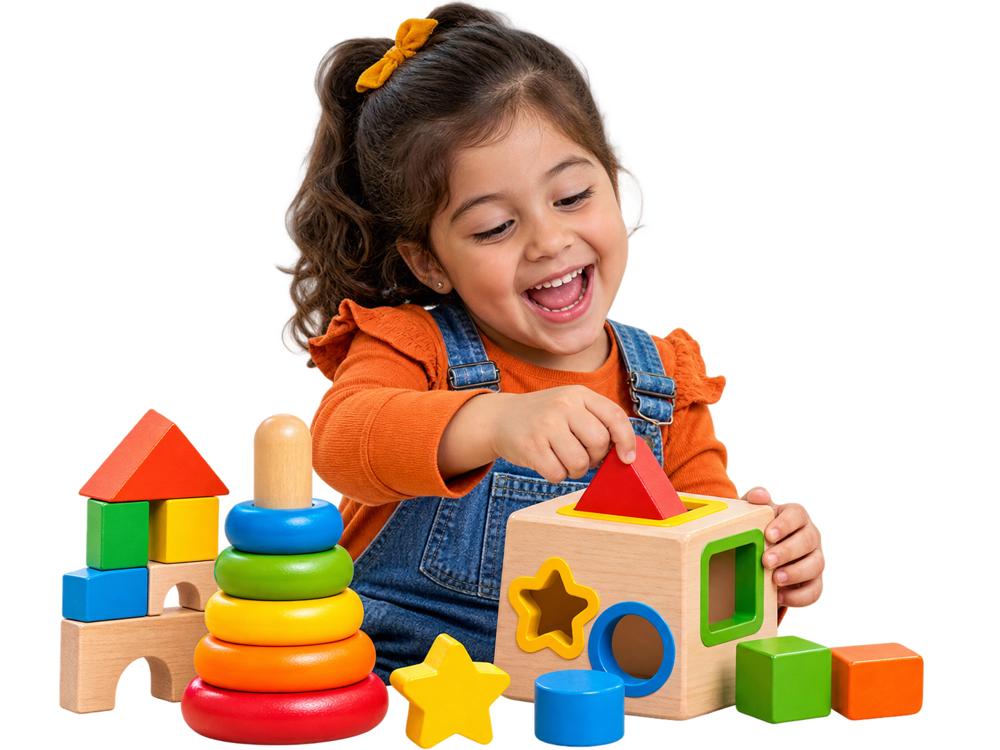

Imagen ilustrativa
Imagen ilustrativaCOMUNICACIÓN
Escuchar y expresarse
Momentos para conversar, nombrar objetos y compartir ideas mediante el juego.
Acompañamos los primeros aprendizajes mediante experiencias de juego, comunicación, movimiento y exploración, respetando el ritmo de cada niño.
Juego · Creatividad · AprendizajeProponemos actividades que invitan a los pequeños a expresarse, compartir e investigar el mundo a través de experiencias adecuadas a su etapa.
Imagen ilustrativaMomentos para conversar, nombrar objetos y compartir ideas mediante el juego.
 Imagen ilustrativa
Imagen ilustrativaExperiencias para practicar turnos, cooperación y habilidades de relación.

Imagen ilustrativaActividades de creatividad, movimiento y pequeñas decisiones.
El aprendizaje temprano no consiste en adelantar contenidos académicos, sino en ofrecer oportunidades de juego y descubrimiento acordes con las necesidades de cada niño.
Conoce también NZER CARE y cómo complementa nuestras actividades de desarrollo infantil.